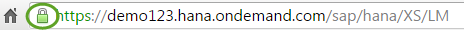

Setting Up Native SAP HANA Transport for SAP HANA Cloud Platform
If you want to perform native SAP HANA transports using SAP HANA Application Lifecycle Management on SAP HANA systems in the SAP HANA Cloud Platform, you must set up a trust relationship so that the SAP HANA source system can be reached by the SAP HANA target system. This is required because systems in the SAP HANA Cloud Platform can only be reached using HTTPS communication.
Context
- Export a certificate of the SAP HANA source system to a file.
- Make the certificate that you exported from the source system known on the
target system.
To do this, create a trust store on the SAP HANA target system and import the exported certificate file into the new trust store.
- Make the configuration settings for native SAP HANA transport on the target system (register the SAP HANA source system and create transport routes).
Export a Certificate on the Source System
Procedure
Example
The following is an example of how to export the certificate if you use Google Chrome.-
Click on the Lock icon in the browser bar:

-
Choose the Connection tab.
-
Choose the Certificate Information link.
The certificate with which you are currently logged on is displayed.
-
In the Certificate dialog box, choose the Details tab.
-
Choose Copy to File… for the certificate.
The Certificate Export Wizard opens.
-
Select the DER encoded binary format and choose Next.
-
Browse for a location where you want to store the file, enter a file name and choose Next. If the export was successful, you get a success message.
Make the Certificate Known on the Target System
Procedure
Make the Configuration Settings for Native SAP HANA Transport
Prerequisites
All prerequisites are fulfilled as described in Setting Up and Using Native SAP HANA Transport and Register a System for a Transport Route.
Procedure
-
Choose
 TRANSPORT
TRANSPORT  System Register
System Register  .
.